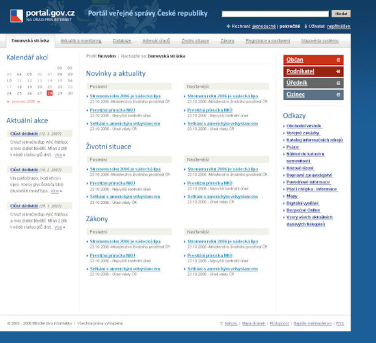

Portal of the Public Administration Czech Republic
web design / 2006

Portal of the Public Administration Czech Republic - Bureau by internet
Goal of the project
Create a multilingual website with a clearly defined structure, which would aggregate all official information about Czech Republic. The site should help citizens as well as foreigners who want to live or start a company in the Czech Republic.
Description of the solution
The challenge for this project was to design a rich content page in an easy-to-read and easy-to-use fashion and structure the content by its importance for all its audience. Close attention was paid to all navigation elements allowing visitors quick and intuitive movement across the whole portal.
My work on this project
While working as a freelancer, I was asked to create a graphical design for this project. It was a really challenging job because I had just a few days to finish it. I came up with a design benefiting from its simplicity, clarity and intuitive usage.